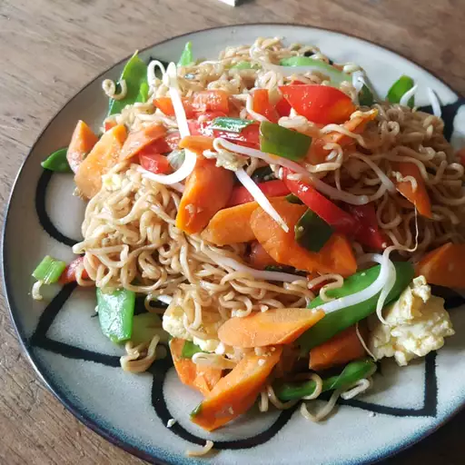

These fried noodles are to die for, I think!
This recipe contains delicious noodles, vegetables, and spices
Ingredients
6 Ounces Noodles
Vegatable Oil
3 Eggs
2 Teaspoons Vegetable Oil
4 Green Onions
1 Small Carrot
½ Cup Green Peas
¼ Cup Red Bell Pepper
2 Tablespoons Sesame Oil
1 Teaspoon Sesame Oil
1 Teaspoon Soy Sauce
Steps
Bring a medium pot of water to a boil. Cook ramen noodles, reserving seasoning packets, in boiling water until
softened, about 3 minutes. Drain noodles and set aside.
Heat 1 tablespoon vegetable oil in a small skillet. Cook and stir beaten eggs in hot oil until scrambled and
firm. Set aside.
Heat 1 teaspoon vegetable oil in a large skillet over medium heat. Cook and stir green onions in hot oil until
softened, 2 to 3 minutes. Remove green onions to a plate; set aside.
Heat remaining 1 teaspoon vegetable oil in the same skillet over medium heat. Cook and stir carrots, peas, and
bell pepper separately until softened, removing each to
the plate with green onions when done.
Combine 2 tablespoons sesame oil with remaining 1 tablespoon vegetable oil in the same large skillet or a wok
over medium heat. Fry cooked noodles in hot
sesame-vegetable oil, tossing frequently, until golden, 3 to 5 minutes. Season with desired amounts of sesame oil,
soy sauce, and reserved ramen seasoning
packets; toss to coat. Stir in cooked vegetables, tossing frequently, until heated through, about 5 more minutes.